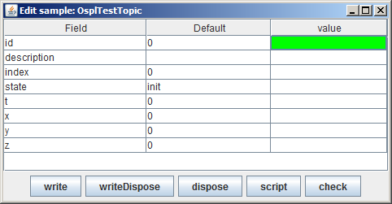
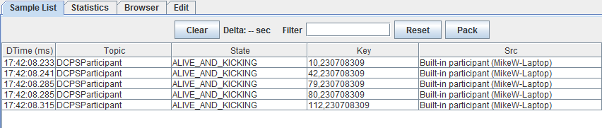
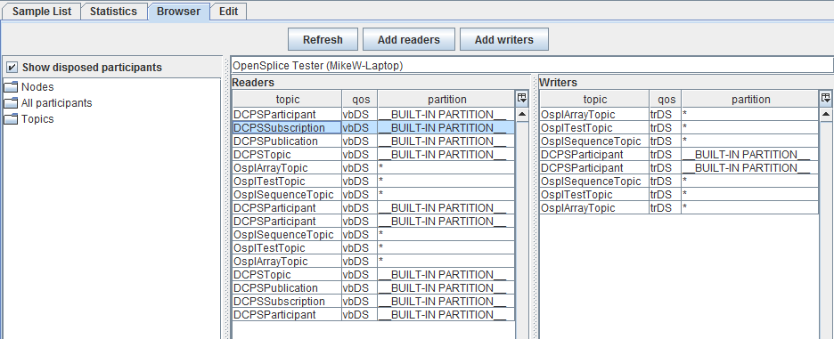
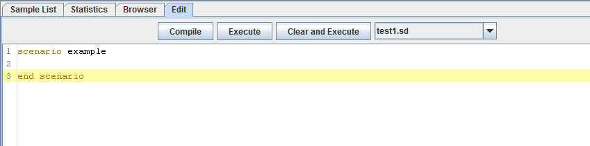
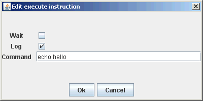
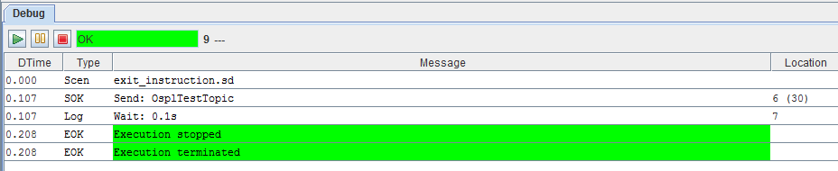

5.1. Introduction
The commands are described below in the order in which they appear in the menus
(starting at the top left).
Where a menu option also has a keyboard shortcut, it is shown in
[italics in square brackets] (for example, [Ctrl+C]).
Some menu options can also be invoked by clicking on buttons in appropriate
tabs or windows.
5.3. Lists
5.3.1. Services
Displays a list of the Services running on this node. A display-only window.
5.3.2. Scripts
Displays a list of the installed Scripts (.sd files) and Batch Scripts
(.bd files).
- Refresh
- Refreshes the list.
- <select> a Script
- Displays the Script in the Edit window
5.3.3. Macros
Displays a list of the installed Macros (.md files).
- Refresh
- Refreshes the list.
- Scen
- Checking this option displays Scripts as well as Macros.
- <select> a Macro
- Displays the Macro in the Edit window
5.3.4. Readers
For each reader the count of received samples is displayed as well as the
QoS and partition. A check box is provided for changing the read state
or the show state. When Read is unchecked the reader stops reading
samples. When Show is unchecked the topic samples of that topic will
not be displayed in the sample list.
- Select all
- Checks the show state for all topic samples.
- Deselect all
- Unchecks the show state for all topic samples.
- <select> a Topic Instance
- Enables you to check/uncheck the Read and Show state.
- <right-click> Delete Reader, [Delete]
- Deletes the selected reader.
- <right-click> Recreate Reader, [Ctrl+R]
- Recreates the selected reader and as such re-reads any persistent/transient
data available.
- <right-click> Show First Sample, [F3], or double-click on the reader
- Shows the first sample for the selected reader.
- <right-click> Edit Sample, [F4]
- Opens an Edit Sample window for the selected topic.
- [F9]
- Opens the field selection window for the display of fields of the
selected topic.
5.3.4.1. Edit Sample Window
The Edit Sample window is used for editing field values of a topic and
then writing the sample or dispose the instance. It is also used to insert
the topic values as a ‘send’ or ‘check’ entry in the current script (at
the cursor position in the script window).
The Edit Sample window can be filled with a topic from both the Topics
window and the Sample List window with the [F4] key. If the topic write
window is filled with a topic from the topics list window then the values
are all empty (except for union discriminators, which get a default value).
If the window is filled from the sample list window then the fields get the
values of the selected topic sample in the sample list. The key fields are
marked in green and the foreign keys are marked in yellow.
Fields can be edited by selecting the edit field (right-most column).
If the field is of an enumerated type then a combo box is displayed which
provides all possible values. The topmost value is empty for reset to the
default value (not set).
The keyboard can be used to navigate the edit fields. The cursor [Up] and
[Down] (arrow) keys move between fields; any other key starts editing
the value in the current field.
Edit sample window

(There is a second form of this window, used when opened from the script with
[Ctrl+Space], [Ctrl+Left-click], or as part of completion. It only has
two buttons: OK and Cancel. Pressing [Ctrl+Enter] or [Ctrl+Return]
is the same as clicking OK.)
- write
- Write the sample.
- writeDispose
- Write the sample and Dispose the instance.
- dispose
- Dispose the instance.
- script
- Instead of writing the sample this creates the script commands to write the
sample. These commands are inserted into the scenario currently being edited
and the user will be taken to this text.
- check
- Similar to script but creates the script command to check the sample values.
- [F4]
- Copy the current selected field from the topic in the instance window.
- [F5]
- Copy all fields based on an equal name from the topic in the instance window.
- [F6]
- Fill all fields with .sec in the name with the current time seconds and
fields with .nanosec in the name with the current time in nanoseconds.
- [Ctrl+T]
- Fills a field of type int with the seconds part of the current time.
- [Ctrl+U]
- Fills a field of type long with a unique key.
- [Ctrl+V]
- Paste a value.
- [Alt+Down]
- Opens the enum editor.
- [Enter], [Return]
- Commits the current edited value.
- [Esc]
- Discards the current edited value.
Once the desired values have been entered the topic can be written by clicking
the Write button, disposed by clicking the Dispose button, or write disposed
by clicking the WriteDispose button.
5.3.5. Topics
The topics list displays the list of topics as known in the system.
- <select> a Topic
- Selects a Topic.
- <right-click> Create Reader
- Create a Reader for the selected Topic.
- <right-click> Create Default Reader
- Makes the selected Reader the default reader to be displayed in the
Samples List.
- [F2]
- The key list definition window will open which allows to change the
(foreign) keys. The syntax is the same as in the add topic window or
topic file. To support the selection of the keys the primary fields
of the topic are displayed and will be inserted at the cursor position
in the edit field when clicked.
5.3.6. Groups
The Groups list displays the list of groups created Tester and currently active.
The Groups tab is only visible in the main window when at least one Group has been
created in the current Tester session.
- <select> a Group
- Selects a Group.
- <right-click> Delete Group, [Delete]
- Delete the selected Group.
- <right-click> Publish Coherent Sets, [F4]
- Create a Coherent publisher window from which coherent sets of data can be
created and written.
5.4. Windows
5.4.1. Sample List Window
The Sample List window is used to display samples. By default the delta time,
topic name, state, key, and source are displayed. Additional columns can be
added and filters defined.
Sample List window

- Clear
- Clears the list.
- Filter <value>
- The current filter value.
- Reset
- Resets the filter value.
- Pack
- Adjusts the displayed column widths.
- <select> a Sample
- Selects a sample to use with <right-click> commands. [Ctrl+Left-click]
selects another sample. If exactly two samples are selected, the difference
in source time will be displayed in the top bar of the Sample List window.
- <right-click>Select Extra Fields, [F9]
- Opens a dialog box allowing selection of extra fields to display.
- <right-click> Display Sample, <double-click>
- Displays sample details.
- <right-click> Display Sample New Window, [F3]
- Displays sample details in new window.
- <right-click> Compare Sample, [F2]
- Compares two samples with each other and shows differences in red color.
- <right-click> Edit Sample, [F4]
- Allows Tester to edit the selected sample values.
- <right-click> Filter on topic, [Ctrl+F5]
- Filters on the selected topic value.
- <right-click> Filter on topic and key, [F5]
- Filters on both the selected topic and key values.
- <right-click> Filter on State, [F12]
- Filters on the State of the selected sample.
- <right-click> Filter of Key, [F6]
- Filters on the Key value of the selected sample.
- <right-click> Filter on Column Text, [F]
- Sets the filter to be the value of the current column.
- <right-click> Filter Reset, [F7]
- Resets the filter value.
- <right-click> Delete extra column, [Del]
- Removes the selected extra column from the list.
- <right-click> Add Column as Key to Chart, [K]
- Assigns the selected column as the key field for the chart.
- <right-click> Add Column as X to Chart, [X]
- Assigns the selected column as the x-axis for the chart.
- <right-click> Add Column as Y to Chart, [Y]
- Assigns the selected column as the y-axis for the chart.
- [Ctrl+F]
- Finds the next sample containing the search text in any column.
5.4.2. Statistics Window
The Statistics window provides statistics for the topics in use,
such as write count, number of alive topics, etc.. The following
values are displayed for each topic:
- Count
- The number of samples currently in the OpenSplice database
- Arrived
- The number of arrived samples
- Takes
- The number of takes by the reader
- Reads
- The number of reads by the reader
- Alive
- The number of alive topics (instances not disposed)
- Writes
- The number of written samples
The left table shows either the participants, the topics, or the statistics
of the currently-selected reader/writer as indicated by the selected tab.
When the list of participants is shown, a participant can be selected. The second
table shows the list of readers with their statistics, the third table show the
list of writers with their statistics.
When the list of topics is shown, a topic can be selected. The second table shows
the list of participants reading the topics with their statistics, the third
table shows the list of participants writing the topic with their statistics.
If a value of -1 or -2 is shown then an error occurred during the
retrieval of the statistics for the reader/writer.
By selecting a row in the reader or writer list all statistics for that reader
or writer will be shown in Stats tab of the left window.
- Refresh
- Will refresh the content.
- Add readers
- Will add the topics in the reader list to the list of monitored topics.
- Add writers
- Will add the topics in the writer list to the list of monitored topics.
- [CTRL+F]
- Finds the next reader/writer containing the search text in any column.
5.4.3. Browser Window
The Browser window enables you to view the Readers and Writers in the system.
You may browse by Node, Participant, or Topic.
Browser window

- Refresh
- Will refresh the browser content.
- Add readers
- Will create a Tester reader from the list of readers for the selected
read-topic. The QoS of the discovered reader will be used to ensure that
data read by that reader will be captured in the timeline.
- Add writers
- Will create a Tester reader from the list of writers for the selected
written-topic. The QoS of the discovered writer will be used to ensure
that data written by that writer will be captured in the timeline.
- Show disposed participants
- Used to toggle the display of disposed participants.
- [CTRL+F]
- Finds the next reader/writer containing the search text in any column.
5.4.4. Edit Window
The Edit window is used to create and modify Scripts and Macros.
Please refer to Chapter 5, Scripting, on page 73, for more details.
Edit window

Traditional text editing commands and standard key combinations (such as
[Ctrl+X] and [Ctrl+C]) are recognized. Menu commands and keyboard
shortcuts for editing scripts and macros are described in
sections 4.2.7, Editor, 4.2.8, Edit, 4.3.2, Scripts, and 4.3.3, Macros.
When editing macros, instruction-specific editing dialogs may open; for example,
the send, check and execute macro instructions have their own
editing dialogs which help to make your entries conform to their syntax.
Editor for execute instruction

- Compile
- Compile the current content.
- Execute
- Run the current script or macro without clearing the sample list.
- Clear and Execute
- Clears the sample list and then runs the current script/macro and
returns the user to the Sample List window.
- <drop down>
- Allows for quick selection of recently-edited scripts/macros.
5.4.5. Debug Window
The Debug window is used for tracing/debugging Script compilation and execution.
For each step, the day/time, type of message, and message text is displayed along
with the location (line number) in the scenario.
Debug window

Control execution of the scenario with the buttons at the top left of the window:
- Start (Play)
- Start or resume execution
- Pause
- Pause execution
- Stop
- Stop (halt) execution
- [CTRL+F]
- Finds the next message containing the search text in any column.
{kind=link}
{kind=link}
{kind=link}
{kind=link}
{kind=link}
{kind=link}
{kind=link}
{kind=link}
{kind=link}
{kind=link}
{kind=link}
{kind=link}
{kind=link}
{kind=link}